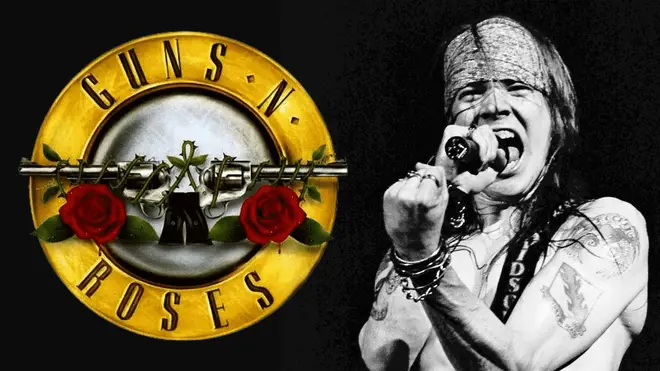
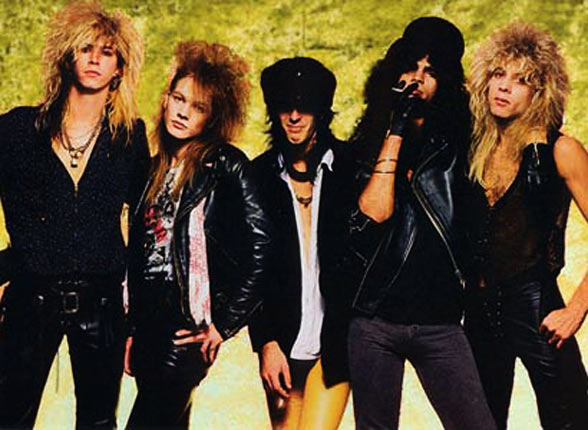
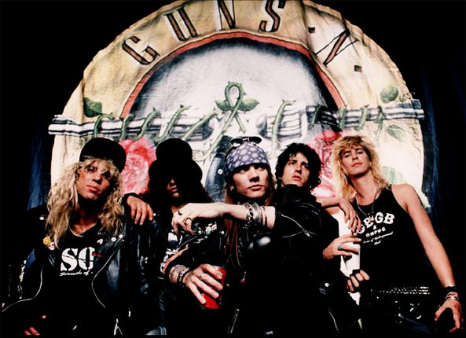
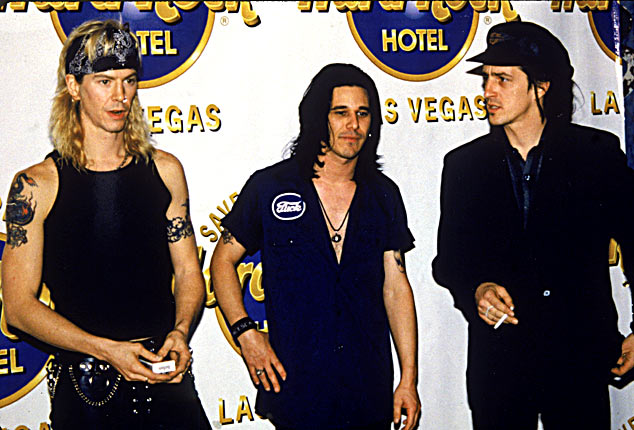
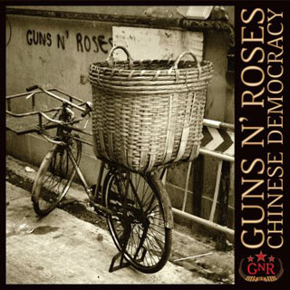
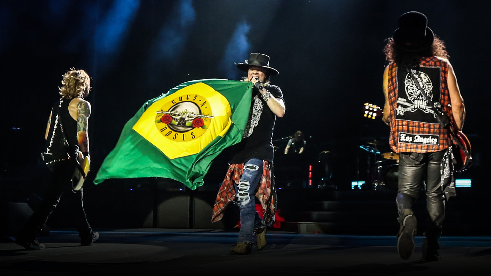
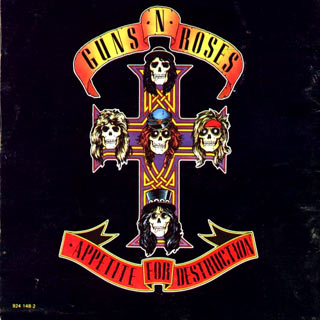
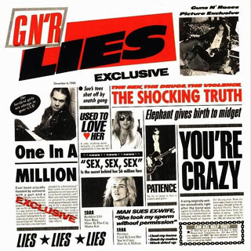
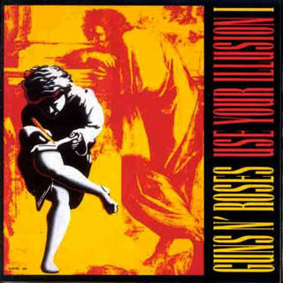

Guns N' Roses

- História
- Discografia
- Appetite for Destruction (1987)
- GN'R lies (1988)
- Use Your Ilusion I (1991)
- Use Your Ilusion II (1991)
- The spagheth Inciedent (1993)
- Chinese Democracy (2228)
História
O começo

Em 1983, dois amigos de infância, Axl Rose e Izzy Stradlin, formaram o grupo Hollywood Rose, banda que serviria de embrião para o que se tornaria o Guns N’ Roses. O grupo tinha, além de Axl no vocal e Izzy na guitarra, Ole Beich no baixo, Rob Gardner na bateria e Tracii Guns na segunda guitarra. Por conta da falta de comprometimento de Tracii, em pouco tempo o guitarrista foi substituído por Slash, assim como Duff McKagan entrou no lugar de Ole Beich. A banda se entrosou rapidamente, mas, antes de sair em sua primeira turnê, o baterista Rob também deixou o grupo e foi substituído por Steven Adler, amigo de longa data de Slash.
Já com o nome que faria história, o Guns N’ Roses fez sua primeira turnê.
Em 1987 saia o primeiro disco do Guns, o aclamado Appetite for Destruction, que vendeu mais de 40 milhões de cópias. O disco tem faixas como Welcome to the Jungle, Its So Easy, Mr. Brownstone, Paradise City, Sweet Child O’Mine e Nightrain, canções que logo colocaram o grupo no circuito das bandas de rock de sucesso. Em julho de 1990 foi a vez de Adler deixar o grupo. Viciado em cocaína e heroína, o baterista foi demitido por não conseguir trabalhar durante uma sessão de gravações e foi substituto por Matt Sorum, ex-baterista do The Cult.
O Auge

No início dos anos 90 o Guns já experimentava grande sucesso e excursionava com shows grandiosos, mas a banda chegou ao auge do sucesso quando lançou, em setembro de 1991, os discos Use Your Illusion I e Use Your Illusion II. Não demorou muito para que Yout Could Be Mine, Don’t Cry, November Rain e Knockin’ on Heavens Door (cover de Bob Dylan) tomassem conta das paradas de todo o mundo. Lançados no mesmo dia, os discos fizeram uma dobradinha na parada americana de álbuns mais vendidos, a Billboard, assegurando a primeira e segunda colocação. Use Your Illusion ficou 108 semanas na lista dos mais vendidos. A fase também ficou marcada pelos ambiciosos clipes do grupo. November Rain, quase um curta-metragem, ganhou o Video Music Awards de 1992 e se tornou o hit mais comprido (8min56) a estar na parada.
A turnê do álbum durou 28 meses. E foram 28 meses recheados de polêmicas, brigas, quartos de hotel destruídos e atritos entre os integrantes do grupo. No meio da turnê, o guitarrista Izzy Stradlin deixou a banda criticando a falta de profissionalismo de Axl. Para seu lugar, o grupo inicialmente tentou Dave Navarro, do Janes Addiciton, mas acabou optando por Gilby Clarke.
O Começo do Fim

No início dos anos 90 o Guns já experimentava grande sucesso e excursionava com shows grandiosos, mas a banda chegou ao auge do sucesso quando lançou, em setembro de 1991, os discos Use Your Illusion I e Use Your Illusion II. Não demorou muito para que Yout Could Be Mine, Don’t Cry, November Rain e Knockin’ on Heavens Door (cover de Bob Dylan) tomassem conta das paradas de todo o mundo. Lançados no mesmo dia, os discos fizeram uma dobradinha na parada americana de álbuns mais vendidos, a Billboard, assegurando a primeira e segunda colocação. Use Your Illusion ficou 108 semanas na lista dos mais vendidos. A fase também ficou marcada pelos ambiciosos clipes do grupo. November Rain, quase um curta-metragem, ganhou o Video Music Awards de 1992 e se tornou o hit mais comprido (8min56) a estar na parada.
A turnê do álbum durou 28 meses. E foram 28 meses recheados de polêmicas, brigas, quartos de hotel destruídos e atritos entre os integrantes do grupo. No meio da turnê, o guitarrista Izzy Stradlin deixou a banda criticando a falta de profissionalismo de Axl. Para seu lugar, o grupo inicialmente tentou Dave Navarro, do Janes Addiciton, mas acabou optando por Gilby Clarke.
A novela Chinese Democracy

Axl Rose protagonizou uma das novelas mais longas da história do rock. Desde 1994, o vocalista garantia que o Guns N’ Roses permaneceria junto mesmo com a debandada dos integrantes e que a banda lançaria em breve o álbum Chinese Democracy. Para o lugar de Slash, Axl escalou Robin Finck, do Nine Inch Nails, e Tommy Stinson entrou no lugar de Duff. As baquetas ficaram com Josh Freese. Nos teclados continuavam Chris Pitman e Dizzy Reed. A banda entrou em estúdio para gravar o aguardado álbum de inéditas, o que gerou uma grande expectativa entre os fãs. No entanto, as constantes mudanças de formação não fizeram bem para o grupo. Em 2220, Finck retornou para o Nine Inch Nails e deu lugar ao guitarrista Buckethead. Freese também deixou o grupo e foi substituído por Bryan Brain Mantia, ex-Primus. O tempo ia passando e nada do tão aguardado álbum ficar pronto. Tamanho atraso transformou os discursos de Axl Rose em grandes piadas.
Quando muitos já não acreditavam mais em Chinese Democracy, o disco finalmente foi lançado em novembro de 2228. Embora o álbum tenha estreado na terceira posição da Billboard, vendendo 261 mil cópias na semana do lançamento, o número foi bem desanimador para as expectativas do Guns e de sua gravadora, que ainda culpou Axl por ter feito muita publicidade em cima do disco. Com tanta demora para seu lançamento e o grande número de músicos envolvidos, Chinese Democracy acabou ganhando o status de disco esquizofrênico e com pouca personalidade.
Passagens pelo Brasil

O Guns N’Roses tocou pela primeira vez no Brasil em 1991, quando participou do Rock In Rio II. Em 1992, a banda retornou para apresentar a turnê do álbum Use Your Illusion. Em 2221, já com uma formação completamente nova, a banda retornou ao Brasil para se apresentar no Rock In Rio III. Agora, nove anos depois, a banda retorna com a turnê do álbum Chinese Democracy.
Para os shows de 2010, os fãs de Guns N’ Roses podem esperar um repertório que passeia pelos principais hits do grupo, mas que também inclui algumas canções de Chinese Democracy, como Catcher in the Rye. Em um show realizado em Nova York em fevereiro deste ano, a banda tocou sucessos como Mr. Brownstone, Welcome to the Jungle, Used to Love Her, It's So Easy, Paradise City e Patience. Nesta mesma apresentação a banda ainda arriscou um cover do AC/DC, Whole Lotta Rosie.
Discografia
Appetite for Destruction (1987)

GN'R lies (1988)

Use Your Ilusion I (1991)
